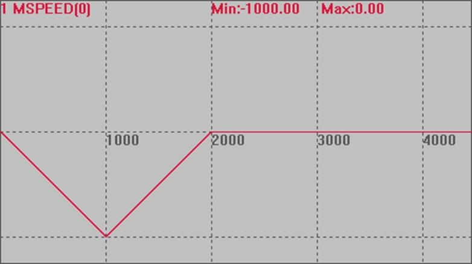
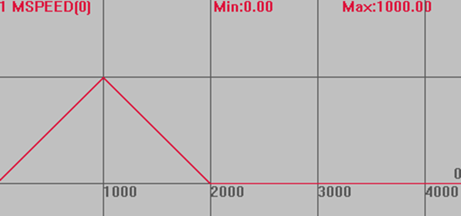
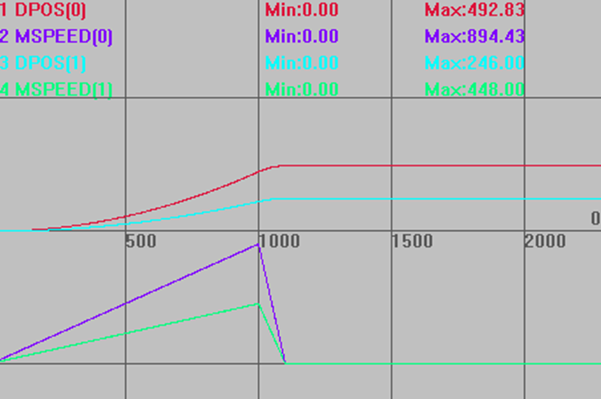
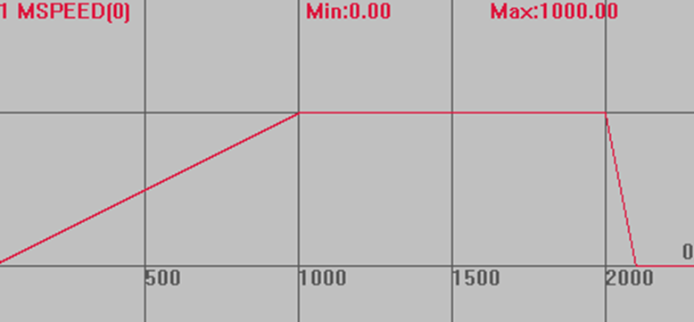
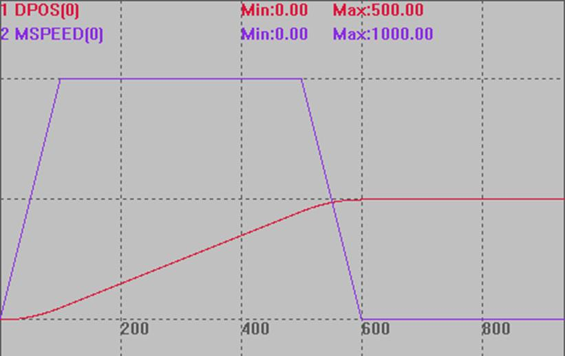

|
类型 |
单轴运动指令 | ||||||||||
|
描述 |
BASE轴减速停止，如果轴参与插补，也停止插补运动。
如果指定轴在BASE轴列表中，无论CANCEL主轴或者BASE轴列表中的轴，都停止轴组的插补运动 模式2减速度按FASTDEC和DECEL中最大的值，一般FASTDEC设置大于DECEL。 CANCEL后要调用绝对位置运动，必须先WAIT IDLE等待停止完成。 | ||||||||||
|
语法 |
CANCEL(mode) mode：模式选择
CANCEL(4)为4系列控制器固件版本170708及以上支持。 CANCEL(3)不要对正在插补的从轴使用。 | ||||||||||
|
适用控制器 |
通用 | ||||||||||
|
例子 |
例一 mode=0 BASE(0) DPOS=0 SRAMP=0 ATYPE=1 UNITS=100 SPEED=1000 ACCEL=1000 DECEL=1000 '减速度设为1000 FASTDEC=10000 '快减减速度设为10000 TRIGGER '自动触发示波器 MOVE(1000) '当前运动 MOVE(-1000) '缓冲运动 CANCEL(0) '此时轴停止
运动轨迹 MSPEED(0)垂直刻度1000 
例二 mode=1 BASE(0) DPOS=0 SRAMP=0 ATYPE=1 UNITS=100 ACCEL=1000 DECEL=1000 '减速度设为1000 FASTDEC=10000 '快减减速度设为10000 TRIGGER '自动触发示波器 MOVE(1000) '当前运动 MOVE(-1000) '缓冲运动 CANCEL(1) '此时轴只执行完MOVE(1000)
运动轨迹 MSPEED(0)垂直刻度1000  因为取消的是缓冲，当前运动还是按减速度正常停止。
例三 mode=2 BASE(0,1) DPOS=1,1 ATYPE=1,1 SPEED=1000,1000 ACCEL=1000 DECEL=1000 '减速度设为1000 FASTDEC=10000 '快减减速度设为10000 SRAMP=0,0 TRIGGER MOVE(1000,500) '插补运动 DELAY(1000) '延时1秒 CANCEL(2) AXIS(1) '停止轴1，轴1参与了插补，插补运动也停止减速度为10000
运动轨迹和速度曲线 DPOS(0)垂直刻度1000，无偏移 MSPEED(0)垂直刻度1000，偏移-1000 DPOS(1)垂直刻度1000，无偏移 MSPEED(1)垂直刻度1000，偏移-1000 
例四 mode=3 BASE(0) ATYPE=1 DPOS=0 SPEED=100 ACCEL=1000 DECEL=1000 '减速度设为1000 FASTDEC=10000 '快减减速度设为10000 TRIGGER '自动触发示波器 MOVE(10000) '当前运动10000 DELAY(2000) '延时2秒 CANCEL(3) '此时直接切断脉冲发送，轴立即停止
运动轨迹 MSPEED(0)垂直刻度1000 
例五 mode=4 BASE(0) DPOS=0 ATYPE=1 UNITS=100 SPEED=1000 ACCEL=10000 DECEL=10000 '减速度设为10000 FASTDEC=100000 '快减减速度设为100000 TRIGGER '自动触发示波器 MOVE(1000) '当前运动 MOVE(-2000) '缓冲运动 DELAY(500) CANCEL(4) '急停，减速度10000
运动轨迹和速度曲线 DPOS(0)垂直刻度500，无偏移 MSPEED(0)垂直刻度500，无偏移  | ||||||||||
|
相关指令 |